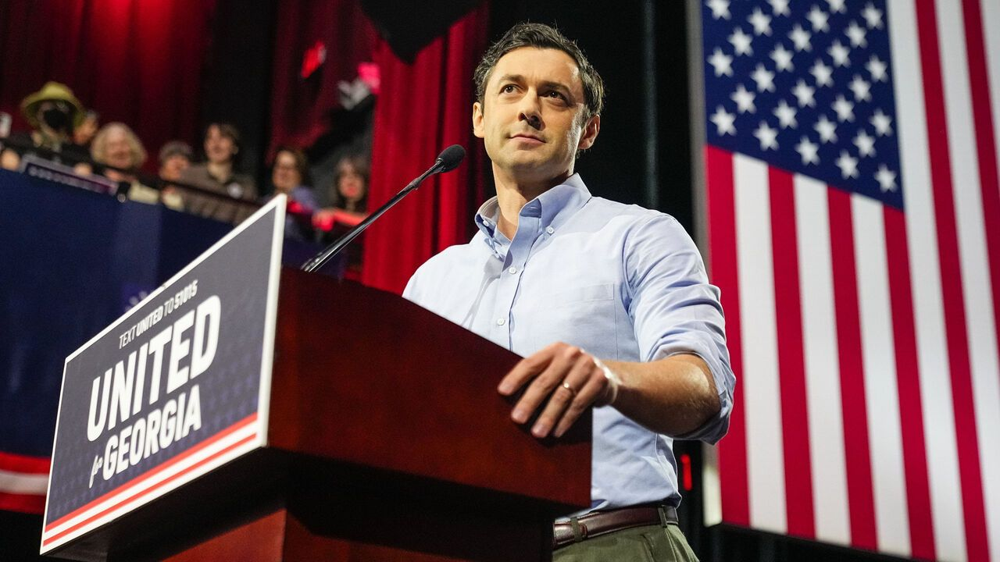

Jon Ossoff: On Life & Liberty
ALEJO CRUZ | Oct. 20, 2025

Jon Ossoff, incumbent U.S. Senator from Georgia, is running for reelection in the 2026 midterm elections. He is the Democratic candidate up against Republican Congressman Mike Collins. Ossoff was born and raised in the Metro Atlanta area. He was the first Democrat sworn into the U.S. Senate from Goergia since 1996 and the first millennial to serve in the Senate. Ossoff has helped pass over a dozen bipartisan bills into law since taking office in 2021. His platform priotizes anti-curruption oversight, infrastructure development, and access to healthcare. He is a former investigative journalist/documentary filmmaker whose work centered around corruption, human trafficking, and war crimes.
Resources
Food
Ossoff has supported legislation to make food affordable and healthy both fo Georgians and nationwide. In 2024, he introduced the Fresh Food Act for the development of grocery stores in underserved communities. And in 2025, he opposed the proposed cuts to SNAP benefits.
Water
Ossoff has a record of supporting the accessibility of clean water. He has supported upgraded to Georgia’s aging water infrastructure. In 2026, he co-sponsoered the Rural Water System Disaster Preparedness and Assistance Act — a bipartisan bill to improve the water systems across rural Georgia.
Electricity
Ossoff’s support of Georgia’s infrastructure developemts has involved the state’s clean-energy economy. Affordability for families has been a part of his border agender, but no household-specific bills have been introduced.
Housing
Landlords
There are two notable actions taken by Ossoff that demonstrate his opinion on renter’s rights. He supported a bipartisan provision that would investigate certain HUD-supported rental properties that became law in 2026. He also introduced the bipartisan Access to Homeownership Act the help boost the credit ratings of renters with a positive rental payment history.
Homes
BOssoff has pushed for increased funding to help Georgian families with rent costs through the HUD Tenant-Based Rental Assistance program. He has also been in favor of expanding housing construction and limit out-of-state companies from purchasing single-family homes.
Homelessness
Aside from securing federal funding for the Salvation Army in North Georgia, Ossoff has not made clear as to what his approach to homelessness is.
War
Iran
Ossoff has critizend the Trump administration for their military action in Iran. He belives Congress should still have a say in matters of war. His office released an offical statement on Iran in February 2026.
Israel
Ossoff has been fairly consistent with how he has voted on Israel. He has supported efforts to improve their security, but has opposed the sale of U.S. weapons like rifles to Israel. Ossoff has criticized Netanyahu’s government at-large.
Migration
DHS & ICE
Ossoff has been citicial of the Trump administration’s approach to immigration enforcement. He has investigated human rigts abuses in detention centers and is opposed future ICE funding without additional safeguards. Ossoff does not currently have this own plan on immigration and what the future of ICE may look like.
Deportations
Ossoff was one of 12 Senate Democrats that voted in favor of the Laken Riley Act in 2025, which eroded due process rights for immigrants. However, he has come to the defence of U.S. citizens who have been wrongfully detained or deported during immigration raids.